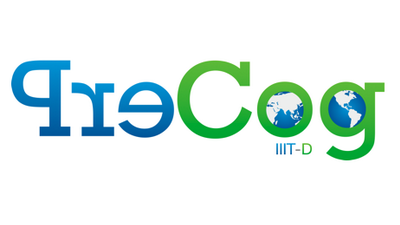

Research Intern
May 2021 - Aug 2021
Worked on document understanding to come up with a novel method to enable non-linear consumption of documents.
Used React to build an end-to-end demo that leveraged question-answering and topic-modelling to provide personalised consumption of an input financial report.
Work accepted at NAACL'22, and patent filed with USPTO.

Honors Research Assistant
May 2022 - May 2020
Worked with Dr Ponnurangam Kumaraguru on the following:
Designed and implemented a feature extraction pipeline that leveraged hyperbolic manifolds to
capture potentialy insiduous interaction patterns on Twitter. Work accepted at WI-IAT 2021.
Characterized and classified suspended vs normal accounts on Twitter, and
a special third class of users who had their suspensions reversed. Work accepted at WI-IAT 2021.
Identified inequities against the rural population in India's COVID-19 vaccination drive. Preliminary report out, WIP.
Independent Study
December 2021 - December 2020
Worked with Dr. K Madhava Krishna to develop a synthetic data generation pipeline
with domain randomisation for simulation-to-real transfer for multi-layered scene
layout estimation in warehouse settings. Paper accepted at ICVGIP'21.
Teaching Assistant
Teaching assistant for the courses:
Computational Social Science: Spring 2022
Online Privacy: Monsoon 2021
Operating Systems and Networks: Monsoon 2020
Responsible for conducting, setting and correcting various tutorials, assignments
and quizzes.
Open Source Contributor
June 2020 - July 2020
Worked with the organization CodeZoned based in IIT-Jodhpur over a two-month period
to write the code for the AdaBoost multi-class classification machine learning algorithm. Implementation included writing code for
the GPU in CUDA C.